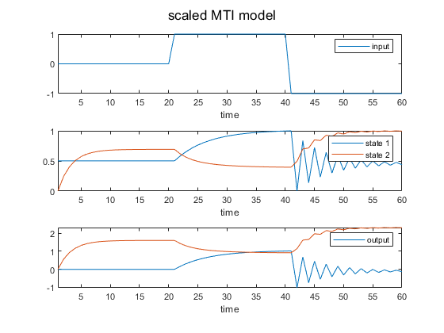
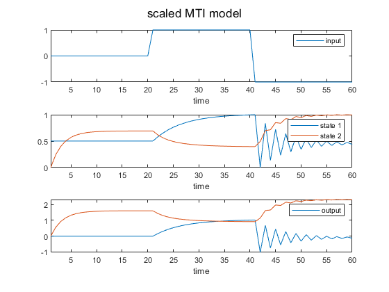

mss2mss
Affine state transformations of MTI models (currently only permutation, scaling and offset allowed)
Contents
Syntax
[sys_sc] = mss2mss(sys, T, c)
Description
[mtiSystemTransformed] = mss2mss(mtiSystem, transformation, offset)
Linear state transformation (and optionally input transformation) of an explicit MTI model in CPN1 format. Currently only permutation, scaling and offset is possible (no rotation, i.e. the transformation matrix must have exactly one non-zero element per row and column).
The tranformation is done with the linear state transformation

and
 .
.
where T can have only 1 non-zero element per row and column.
The transformed MTI system in normalized representation is given by


The output is a MTI model with the same input and output behavior as the original system, but with scaled states (and optionally scaled inputs) according to the transformation matrix and offset vector.
If the transformation matrix has dimensions n x n (with n being the number of states), then only states will be scaled. If the transformation matrix has dimensions (n + m) x (n + m) then the inputs will be scaled, too (where m is the number of inputs).
Combining this function with dataProcessing.scaleData allows for easy scaling of states (and optionally inputs) between lower and upper bounds.
Input arguments
mtiSystem - mss object (eMTI system)
transformation - transformation matrix (must be diagonal)
offset - vector of offsets
Output arguments
mtiSystemTransformed - mss object (transformed eMTI system)
Example state transformation
Build multilinear model (MTI), 2.order, 1 input
F.U = [[0.83, -0.1]; [0, 0.53]; [1, -0.1]]; % state transition matrix F.phi = [[1.0080, 0]; [0, 1.50]]; % state weigting matrix u = [zeros(20, 1); ones(20, 1); -ones(20, 1)]; % input signal t = 1:1:60; % time vector Ts = 1; % sampling time (discrete) obj = mss(CPN1(F.U, F.phi), Ts); % build mti model object
Simulate MTI Model
x0 = [0; 0]; % initial state
[y, ~, xsim] = msim(obj, u, t, x0);
Set limits for states (inputs not scaled in this example)
lbx = [0, 0]; % lower limit state ubx = [1, 1]; % upper limit state
Linear state transformation of mti model
[xsc, ~, T, c] = dataProcessing.scaleData(xsim, u, lbx, ubx); % scale data within limits and obtain transformation matrix and offset msys = mss2mss(obj, T, c); % transform (scale) system
Simulation of transformed mti model
[ysc, ~, xsimsc] = msim(msys, u, t, xsc(1,:));
% simulate scaled mti model with scaled initial state
Plot results
figure() % plot original mti model sgtitle('original MTI model') subplot(3, 1, 1) plot(u) xlim([min(t), max(t)]) xlabel('time') legend('input') subplot(3, 1, 2) plot(xsim) xlim([min(t), max(t)]) xlabel('time') legend({'state 1', 'state 2'}) subplot(3, 1, 3) plot(y) xlim([min(t), max(t)]) xlabel('time') legend('output') figure() % plot scaled mti model sgtitle('scaled MTI model') subplot(3,1,1) plot(u) xlim([min(t), max(t)]) xlabel('time') legend('input') subplot(3,1,2) plot(xsimsc) xlim([min(t), max(t)]) xlabel('time') legend({'state 1','state 2'}) subplot(3,1,3) plot(ysc) xlim([min(t), max(t)]) xlabel('time') legend('output')
 
 Example transformation in state and input
Build multilinear model (MTI), 2.order, 1 input
F.U = [[0.83, -0.1]; [0, 0.53]; [1, -0.1]]; % state transition matrix F.phi = [[1.0080, 0]; [0, 1.50]]; % state weigting matrix u = [zeros(20, 1); ones(20, 1); -ones(20, 1)]; % input signal t = 1:1:60; % time vector Ts = 1; % sampling time (discrete) obj = mss(CPN1(F.U, F.phi), Ts); % build mti model object
Simulate MTI Model
x0 = [0; 0]; % initial state
[y, ~, xsim] = msim(obj, u, t, x0);
Set limits for states and inputs
lbx = [0, 0]; % lower limit state ubx = [1, 1]; % upper limit state lbu = 0; % lower limit input ubu = 1; % upper limit input
Linear state transformation of mti model
[xsc, usc, T, c] = dataProcessing.scaleData(xsim, u, lbx, ubx, lbu, ubu); % scale data within limits and obtain transformation matrix and offset msys = mss2mss(obj, T, c); % transform (scale) system
Simulation of transformed mti model
[ysc, tOut, xsimsc] = msim(msys, usc, t, xsc(1,:));
% simulate scaled mti model with scaled initial state
plot results
figure() % plot original mti model sgtitle('original MTI model') subplot(3, 1, 1) plot(u) xlim([min(t), max(t)]) xlabel('time') legend('input') subplot(3, 1, 2) plot(xsim) xlim([min(t), max(t)]) xlabel('time') legend({'state 1','state 2'}) subplot(3, 1, 3) plot(y) xlim([min(t), max(t)]) xlabel('time') legend('output') figure() % plot scaled mti model sgtitle('scaled MTI model') subplot(3, 1, 1) plot(usc) xlim([min(t), max(t)]) xlabel('time') legend('input') subplot(3, 1, 2) plot(xsimsc) xlim([min(t), max(t)]) xlabel('time') legend({'state 1','state 2'}) subplot(3, 1, 3) plot(ysc) xlim([min(t), max(t)]) xlabel('time') legend('output')